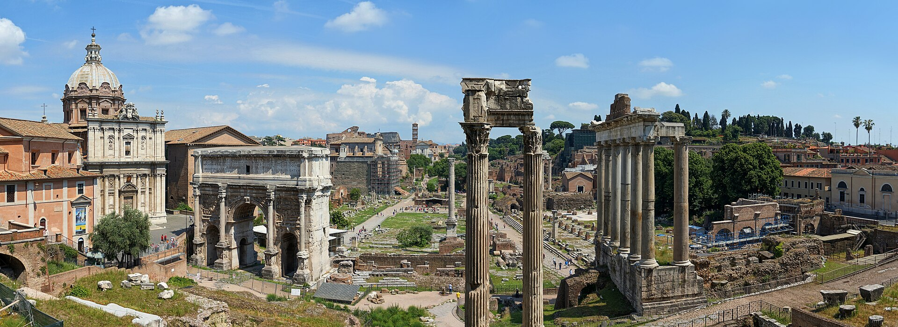
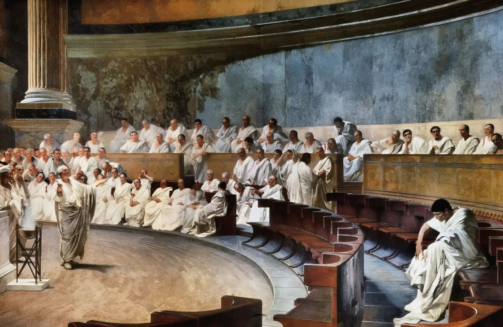
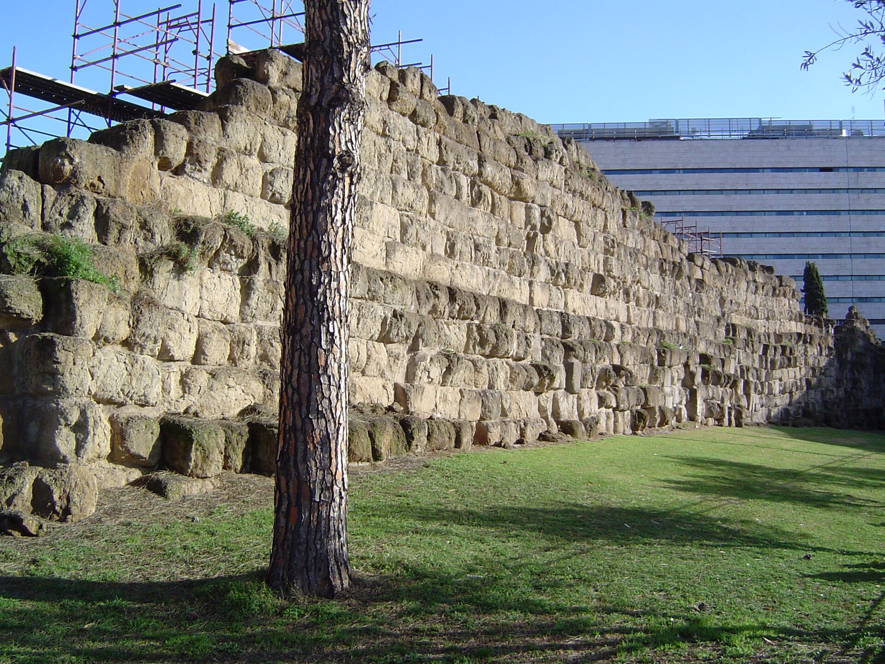

Überblick
Königszeit und frühe Republik bezeichnet die erste Phase der römischen Geschichte im Überblick der Timeline Römisches Reich: von den traditionellen Anfängen der Stadt (legendär 753 v. Chr.) über die Königszeit bis zur Institutionalisierung der Republik und der ersten Expansion in Latium und Mittelitalien. Konventionell reicht dieser Block bis etwa an die Schwelle der Punischen Kriege (um 264 v. Chr.). Die Überlieferung stammt vor allem aus viel späteren Autoren (Livius, Dionysios von Halikarnassos, Plutarch); sie mischt Erinnerung, aitiologische Erzählung und spätrepublikanische Projektionen. Archäologie und kritische Forschung trennen deshalb sorgfältig zwischen Sage und Befund.
Historisch gesichert ist: In der Eisenzeit entstanden Siedlungen auf den Hügeln am Tiber, vor allem am Palatin; im 7. und 6. Jahrhundert verdichtete sich daraus eine städtische Siedlung mit Forum, Kultbauten und etruskisch geprägter Elitekultur. Die „sieben Könige“ und Romulus gehören der Tradition an; die späten Könige und die etruskische Prägung Roms im 6. Jahrhundert lassen sich mit dem archäologischen Bild besser verbinden. Der Sturz der Monarchie (traditionell 509 v. Chr.) und der Aufbau republikanischer Ämter, des Senats und der Volksversammlungen formten eine Ordnung, die in den folgenden Jahrhunderten durch die Ständekämpfe zwischen Patriziern und Plebejern umgebaut wurde.
Militärisch und politisch blieb Rom zunächst eine mittelitalische Macht: Bündnisse und Konflikte mit Latinern, Etruskern (Veji), Volskern und Äquern, die Einnahme Vejis (traditionell 396) und der gallische Schlag um 390/387 prägten das Bild. Religion, Bürgerrecht und die frühe Legion verbanden Identität und Kriegsdienst. Die großen Mittelmeerkriege und die Umgestaltung Italiens unter römischer Hegemonie behandelt der folgende Block Mittlere und späte Republik.
Akteure
- Romulus und Remus (Sage): mythische Gründerzwillinge; Romulus als erster König in der Tradition; historisch nicht als Personen nachweisbar.
- Die sieben Könige (Tradition): Romulus, Numa Pompilius, Tullus Hostilius, Ancus Marcius, Tarquinius Priscus, Servius Tullius, Tarquinius Superbus; Institutionenerfinder der annalistischen Erzählung.
- Servius Tullius (Tradition/umstritten): sechster König; zugeschrieben werden Census, Zenturienordnung und Stadtausbau; teils mit der etruskischen Figur Mastarna verknüpft.
- Lucius Tarquinius Superbus (Tradition): letzter König; Tyrannengestalt; seine Vertreibung markiert den Beginn der Republik in der Sage.
- Lucius Iunius Brutus (Tradition): Anführer gegen die Tarquinier; einer der ersten Konsuln; Symbolfigur der republikanischen Freiheit.
- Patrizier: erbliche Oberschicht, die in der frühen Republik die hohen Ämter und den Senat dominierte.
- Plebejer: Bürger ohne patrizischen Status; forderten Rechtsschutz, Schuldenerleichterung und Zugang zu Ämtern.
- Volkstribunen (tribuni plebis): nach der Tradition ab den 490er Jahren Schutzbeamte der Plebs mit Interzession und Unverletzlichkeit.
- Konsuln, Senat und Volksversammlungen: zentrale Organe der Republik; Jahresamt, Beratung und Gesetzgebung/Wahl.
- Decemvirn (Tradition, um 451/450): Zehnmännerkommission zur Aufzeichnung des Zwölftafelgesetzes.
- Marcus Furius Camillus (Tradition): Feldherr und Diktator; mit der Einnahme Vejis und der Erholung nach dem Galliersturm verbunden.
- Latinerbund und Nachbarvölker: Latiner, Etrusker (bes. Veji), Volsker, Äquer, später Samniten als Partner und Gegner früher Expansion.
- Priesterschaften und Kultpersonal: Pontifices, Auguren und Vestalschwestern; Religion als öffentliches Ordnungssystem.
- Bürger-Soldaten der frühen Legion: wehrfähige Eigentümer; Kriegsdienst als Kern römischer Bürgerschaft.
Was geschah
Gründungssagen und Archäologie

Die Römer datierten die Stadtgründung auf das Jahr 753 v. Chr. (varronische Ära) und erzählten von Aeneas, Alba Longa, den Zwillingen Romulus und Remus, der Wölfin und dem Brudermord. Diese Erzählungen erklären Namen, Kulte und Institutionen; sie sind keine chronikartigen Berichte. Archäologisch belegen Hüttenreste und Gräber auf dem Palatin und benachbarten Hügeln eine Besiedlung seit der Eisenzeit (etwa 10./9. Jahrhundert). Im 8. und 7. Jahrhundert verdichteten sich Dörfer; das spätere Forum diente zunächst als Nekropole und wurde erst später trockengelegt und zum öffentlichen Raum umgestaltet.
Kontakte zu Griechen und Etruskern sind greifbar: Importkeramik, Bauweisen und Kultformen. Eine politisch einheitliche „Stadt Rom“ entstand wahrscheinlich erst im Laufe des 7. und vor allem des 6. Jahrhunderts, nicht an einem einzigen Gründungstag. Die Kapitolinische Wölfin als ikonisches Bild gehört zur späteren Erinnerungskultur; das Bronzewerk selbst ist kunsthistorisch umstritten und darf nicht als Beweis der Gründungssage gelesen werden. Sage und Archäologie ergänzen einander also nur bedingt: Die Tradition liefert Sinnstiftung, der Boden Befunde von Siedlung, Kult und Elite.
Königszeit und etruskischer Einfluss
Die Königszeit der Annalistik umfasst sieben Herrscher und 244 Jahre. Die frühen Könige (Romulus bis Ancus) erscheinen als Typen: Krieger, Priesterkönig, Eroberer, Stadtausbauer. Glaubwürdiger wirkt das Bild der letzten drei: Tarquinius Priscus, Servius Tullius und Tarquinius Superbus. Ihnen schreibt die Tradition große Bauwerke zu (unter anderem Cloaca Maxima, Tempelbau auf dem Kapitol), Heeres- und Bürgerordnung sowie eine stärkere königliche Macht. Das passt zur Archäologie des 6. Jahrhunderts: monumentale Architektur, etruskische Handwerkskunst und eine Stadt, die sich an etruskischen Zentren orientierte.
Etrurien lag nahe; römische Eliten übernahmen Techniken, religiöse Praktiken (Augurik, Triumphformen) und wohl auch Herrschaftspersonal. Ob Rom zeitweise unter direkter etruskischer Kontrolle stand oder eine lokale Dynastie mit etruskischen Wurzeln herrschte, bleibt umstritten. Servius Tullius gilt in einer Tradition als Reformer von Census und Zenturien (Vermögensklassen für Wehr- und Stimmrecht); eine andere Überlieferung bringt ihn mit dem etruskischen Mastarna in Verbindung. Tarquinius Superbus erscheint als Tyrann, dessen Sturz nach der Schändung der Lucretia die Republik begründet. Historisch ist ein Ende der Monarchie im späten 6. oder frühen 5. Jahrhundert plausibel; das genaue Jahr 509 ist traditionell und kalendarisch konstruiert.
Frühe Republik und Institutionen

Nach dem Königssturz trat an die Stelle des Königs das Jahresamt der beiden Konsuln mit imperium, unterstützt vom Senat der Aristokraten und von Volksversammlungen (comitia). Die comitia centuriata wählten hohe Magistrate und entschieden über Krieg; die comitia tributa und das concilium plebis organisierten die Bürgerschaft nach Tribus. Vieles an dieser Ordnung entstand schrittweise; spätere Autoren projizierten fertige Verfassungsbilder auf die Anfänge.
Charakteristisch wurden Annuität (Jahresamt), Kollegialität (zwei Konsuln) und die Ablehnung der Königswürde. Der Senat beriet und steuerte faktisch Politik und Finanzen. Religiöse Ämter blieben lange patrizisch geprägt. Die frühe Legion war eine Bürgerarmee vermögender Wehrpflichtiger; Ausrüstung und Aufstellung hingen von Status und Census ab. Römische Identität knüpfte an mos maiorum, öffentliche Kulte (Jupiter, Juno, Mars, Vesta) und die Idee der res publica als gemeinsame Sache der Bürger. Zugleich blieb die Macht in den Händen weniger gentes; Konflikte um Schuldrecht, Land und Ämterzugang bestimmten die Innenpolitik.
Ständekämpfe und Zwölftafelgesetz
Die Ständekämpfe (Conflict of the Orders) beschreiben die Überlieferung als langen Konflikt zwischen Patriziern und Plebejern vom frühen 5. bis ins frühe 3. Jahrhundert. Moderne Forschung warnt vor Anachronismen: Spätrepublikanische Autoren lasen frührepublikanische Konflikte im Licht ihrer eigenen Parteiungen. Dennoch ist glaubhaft, dass soziale Spannungen um Schuldknechtschaft (nexum), Rechtsschutz und politische Teilhabe reformerische Institutionen hervorbrachten.
Traditionell folgte auf eine erste Secessio der Plebs (um 494) die Einrichtung der Volkstribunen: sacrosanct, mit Vetorecht gegen Amtshandlungen. Um 451/450 kodifizierte eine Decemvirnkommission das Zwölftafelgesetz, die früheste greifbare römische Rechtssatzung. Sie machte Gewohnheitsrecht öffentlich und schützte vor willkürlicher Rechtsprechung, festigte aber zugleich patriarchale und schuldenrechtliche Härten; ein Verbot der Ehe zwischen Patriziern und Plebejern (bald wieder aufgehoben) zeigt die Standesspannung. Weitere Marksteine der Tradition sind die Licinisch-Sextischen Rogationen (um 367) mit Zugang von Plebejern zum Konsulat und die Lex Hortensia (287), die Plebiszite für das ganze Volk verbindlich machte. Damit galt der Ständekampf oft als „beendet“; soziale Ungleichheit und oligarchische Praxis blieben bestehen.
Latium und frühe Expansion

Außenpolitisch kämpfte Rom im 5. Jahrhundert gegen und mit Latinern, Volskern und Äquern. Ein foedus mit den Latinern (traditionell Foedus Cassianum, um 493) wird als Bündnisrahmen beschrieben; die genaue Form lateinischer Kooperation ist unsicher. Der lange Konflikt mit der etruskischen Nachbarstadt Veji endete nach der Tradition 396 mit der Einnahme durch Camillus. Archäologisch markiert das Ende Vejis einen Einschnitt: römisches Material ersetzt lokales; Tuff aus dem ager Veientanus floss in römische Bauten.
Um 390/387 schlugen Gallier (Senonen) das römische Heer an der Allia und plünderten Rom; die Kapitolverteidigung und Camillus’ Rettung sind stark literarisch ausgeschmückt, der Schock selbst ist historisch glaubhaft. Im 4. Jahrhundert dehnte Rom seinen Einfluss in Latium und angrenzenden Gebieten aus, gründete Kolonien und integrierte besiegte Gemeinden über Bürgerrecht und Verträge. Die Samnitenkriege und die Unterwerfung großer Teile Italiens sowie die Konfrontation mit Karthago gehören bereits zur Dynamik der mittleren und späten Republik; hier genügt festzuhalten, dass die frühe Expansion den Rahmen für jene Mittelmeerpolitik schuf.
Beginn
Als Beginn dieses Blocks gilt die traditionelle Stadtgründung 753 v. Chr. bzw., historisch sinnvoller, die eisenzeitliche Siedlungsverdichtung am Tiber und die Herausbildung einer urbanen Gemeinschaft im 7./6. Jahrhundert. Die Königszeit der Annalistik und die etruskisch geprägte Monumentalisierung des 6. Jahrhunderts bilden den Einstieg; der Übergang zur Republik um 509 (traditionell) bzw. im späten 6./frühen 5. Jahrhundert markiert den institutionellen Neubeginn. Für die Gesamtdarstellung des Römischen Reiches ist dieser Block die Ursprungsphase: Sage, Archäologie und frühe Verfassungsgeschichte.
Ende
Das Ende der Blockphase liegt nicht an einem einzigen Schlachtdatum, sondern an der Schwelle zur mittelrepublikanischen Großmachtpolitik: nach konsolidierter Republik, weitgehend entschärften Ständekämpfen (konventionell bis zur Lex Hortensia 287) und nach der Beherrschung Latiums sowie erster Erfolge in Mittelitalien, aber vor dem Ersten Punischen Krieg (264 v. Chr.). Ab hier verschieben sich Maßstab und Schauplatz: Samnitenkriege, Pyrrhos, Karthago und die Umgestaltung des Mittelmeerraums. Diese Entwicklungen behandelt Mittlere und späte Republik. Offen bleiben Datierungsdetails der Königszeit, der Historizität einzelner Secessionen und der genauen Frühform vieler Ämter.
Quellen
- Encyclopaedia Britannica – „ancient Rome“: https://www.britannica.com/place/ancient-Rome
- Encyclopaedia Britannica – „Rome’s foundation myth“: https://www.britannica.com/place/ancient-Rome/Romes-foundation-myth
- Encyclopaedia Britannica – „Roman Republic“: https://www.britannica.com/topic/Roman-Republic
- Encyclopaedia Britannica – „Servius Tullius“: https://www.britannica.com/biography/Servius-Tullius
- Encyclopaedia Britannica – „Tarquin (Superbus)“: https://www.britannica.com/biography/Tarquin-king-of-Rome-534-509-BC
- Encyclopaedia Britannica – „Law of the Twelve Tables“: https://www.britannica.com/topic/Law-of-the-Twelve-Tables
- Encyclopaedia Britannica – „decemviri“: https://www.britannica.com/topic/decemviri
- Encyclopaedia Britannica – „tribune“: https://www.britannica.com/topic/tribune-Roman-official
- Encyclopaedia Britannica – „consul“: https://www.britannica.com/topic/consul-ancient-Roman-official
- Encyclopaedia Britannica – „Senate (Roman)“: https://www.britannica.com/topic/Senate-Roman-history
- Encyclopaedia Britannica – „patrician“ / „plebeian“: https://www.britannica.com/topic/patrician ; https://www.britannica.com/topic/plebeian
- Encyclopaedia Britannica – „Latin League“: https://www.britannica.com/topic/Latin-League
- Encyclopaedia Britannica – „Veii“: https://www.britannica.com/place/Veii
- Encyclopaedia Britannica – „Marcus Furius Camillus“: https://www.britannica.com/topic/Marcus-Furius-Camillus
- Encyclopaedia Britannica – „Palatine Hill“ / „Roman Forum“: https://www.britannica.com/place/Palatine-Hill ; https://www.britannica.com/topic/Roman-Forum
- Encyclopaedia Britannica – „Etruscan“: https://www.britannica.com/topic/Etruscan
- Livius.org – Veii: https://www.livius.org/articles/place/veii/
- Livius.org – Livy, Periochae 1–5: https://www.livius.org/sources/content/livy/livy-periochae-1-5/
- Livius.org – Livy (Quellenübersicht): https://www.livius.org/sources/content/livy/
- Perseus Digital Library – Livy, Ab Urbe Condita (Textzugang): https://www.perseus.tufts.edu/hopper/text?doc=Liv.+1
- World History Encyclopedia – „Roman Republic“: https://www.worldhistory.org/Roman_Republic/
- World History Encyclopedia – „Twelve Tables“: https://www.worldhistory.org/Twelve_Tables/
- World History Encyclopedia – „Conflict of the Orders“: https://www.worldhistory.org/article/859/the-conflict-of-the-orders---the-struggle-between/
- World History Encyclopedia – „Etruscan Civilization“: https://www.worldhistory.org/Etruscan_Civilization/
- British Museum – Learn: Ancient Rome: https://www.britishmuseum.org/learn/schools/ages-7-11/ancient-rome
- Musei Capitolini (Rom) – Einstieg: https://www.museicapitolini.org/en
- Musei Vaticani – Museo Gregoriano Etrusco: https://www.museivaticani.va/content/museivaticani/en/collezioni/musei/museo-gregoriano-etrusco.html
- Met Museum – Heilbrunn Timeline: Etruscan Art: https://www.metmuseum.org/toah/hd/etru/hd_etru.htm
- Digital Prosopography of the Roman Republic (King’s College London): https://romanrepublic.ac.uk/
- Deutsches Historisches Museum (Portal): https://www.dhm.de/